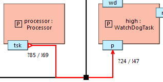

Communication diagrams can be created from the Debug view and are closed automatically when the debug session is terminated. Each communication diagram is specific for a single system or cluster instance, and displays message communications on top of a Composite Structure Diagram. They are particularly useful in combination with communication steps (<F7>). In play/resume mode, the visualization may not show every intermediate communication step, but this does not have an impact on the data that is finally displayed.
The location of the graphical elements can be changed using the Composite Structure Diagram editor. However, the graphical editors are locked during a debug session. If the model is edited during a debug session, then the communication diagram is closed and cannot be reopened anymore during this debug session.
Each port is annotated with a label that indicates the cumulative number of incoming (?) and outgoing (!) messages.
The last message communication is highlighted in the diagram. The used communication channel is colored red, and the direction of the communication is shown using arrows near the ports. More detailed information of the communicated message is shown in the message description note. The displayed parameters are computed using the corresponding data method printString.